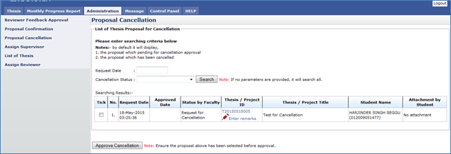

Proposal Cancellation is a feature provided to the Faculty to approve the cancellation request to the submitted proposal by the student. This will enable the student to do the required changes before it can be resubmitted again.

Figure 49: Administration Tab – Proposal Cancellation Page
Steps:-
- Click on the Administration tab on the system Top panel section.
- The Administration menu will be displayed on the system Left panel and click on it.
- Click the Proposal Cancellation and the searching page will be displayed which the user can search for a particular proposal which is request for cancellation and proposal that has been canceled.
- The result can be search by choose the date of cancellation which is Request Date and Cancellation Status and click on Search button.
- The record will be displayed under the search result.
- If neither one of the fill is not chosen, the result will display all list of cancellation data.
- To give remarks, click on the link
 for proceed. (Look at 6.3.1: Enter Remarks Cancellation)
for proceed. (Look at 6.3.1: Enter Remarks Cancellation)
- To read or download attachment/file, click
 .
.
- To approve the cancellation, tick the checkbox.
- Then click Approve Cancellation button to proceed. The status now will be updated from Request for Cancellation to Cancellation Approved.